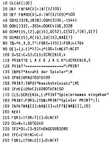

80-Bus Journal |
Mai 1983 · Ausgabe 5 |
Dieses Spiel entspricht dem deutschen Spiel 17+4. Ziel des Spieles ist es, so nahe wie möglich an 21 Punkte zu kommen ohne aber diese Punktzahl zu überschreiten. Sie spielen immer gegen den Geber, der hier durch den Rechner ersetzt wird. Der Geber darf nicht aufhören bevor er mindestens 17 Punkte erreicht hat. Haben Sie am Schluss des Durchganges mehr Punkte als er, so gewinnen Sie Ihren Einsatz. Die Karten werden während des Spieles für den Geber in der unteren Hälfte des Bildschirmes ausgelegt, die der Spieler nacheinander in der oberen Hälfte. Die Punkte der Karten entsprechen ihren aufgedruckten Werten mit zwei Ausnahmen: 1) zählen die Bildkarten (Bube, Dame, König) alle 10 Punkte und 2) das As zählt a) 11 Punkte, wenn der Punktestand durch das As 21 nicht überschreitet und b) 1 Punkt, wenn dadurch 21 Punkte überschritten würden; z.B. Spieler hat 2 Asse in der Hand gleich 12 Punkte (mit dem 2. As wäre er über 21 Punkte). Den höchsten Gewinn (1 1/2-facher Einsatz) erhält ein Spieler, wenn er einen Blackjack hat. Ein Blackjack besteht aus einem As und einer Karte mit dem Wert 10 Punkte. Der Spielablauf ist nun folgendermassen: 1. Die Spieler tätigen Ihre Einsätze. 2. Danach erhält der Geber eine offene und eine verdeckte Karte. 3. Hat der Geber als offene Karte ein As zum Blackjack liegen, so können die Spieler eine Versicherung für diesen Fall abschliessen. Die Versicherung deckt den doppelten Betrag ab, über die sie abgeschlossen wurde; daraus folgt, dass die höchste Versicherungssumme gleich den halben Einsatz sein kann. Hat der Geber nun einen Blackjack, so trägt die Versicherung den Verlust und der Spieler braucht die Versicherungsprämie nicht zu bezahlen. Im anderen Fall wird die Prämie dem Spieler bei der nächsten Abrechnung abgezogen, 4. Hat der Geber keinen Blackjack können die Spieler nun nacheinander eine der folgenden Aktionen wählen: A = aufhören, keine Karte mehr K = eine weitere Karte nehmen 0 = Sie bekommen nur noch eine Karte und spielen aber mit dem doppelten Einsatz (ist nur möglich, wenn Sie sonst noch keine Karte genommen haben). T = Sie teilen Ihr Blatt auf und erhalten zu jeder Karte noch eine dazu, d.h. Sie spielen nun zweimal mit Ihrem Einsatz. Teilen können Sie nur, wenn Sie zwei Karten mit dem gleichen Punktwert haben.
So, und nun viel Glück aber denken Sie daran, auf Dauer gewinnt immer die Bank.
| Seite 22 von 28 |
|---|